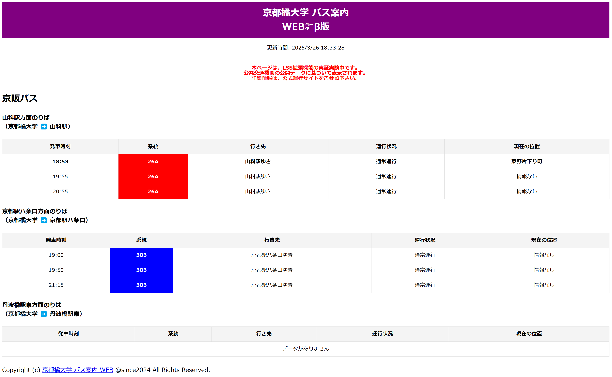

L S S
Location Sinage System
ソフトウェアの開発
※展示イベントのシステム説明ポスターより
●開発概要
京都橘大学から帰宅する際のバスダイヤは、交通機関の公式サイトや大学のWEBページで公開されている。 しかし、授業期間と長期休暇期間でバスの運行本数が異なるため、利用者にとって分かりにくい場合がある。 また、マップや経路案内サイトでは、授業期間のみ運行しているバスが長期休暇期間中も運行しているかのように表示されることがあり、正確な運行情報を得られないという課題がある。 さらに、バスから乗り換える鉄道の運行に影響が出ていた場合、適切な料金で効率的に帰宅するルートを選ぶことが難しくなる。 こうした課題に対し、京都橘大学の学生自治会と連携し、帰宅時の正確なバス運行情報に加え、乗り換え先の鉄道の運行状況も提供する「運行情報 統合表示板」を開発した。 現在、このシステムは京都橘大学のコモンズに実験的に設置され、バスと鉄道の最新の運行情報をリアルタイムで確認できるようになっている。
●情報収集と表示の仕組み
京阪バスのBusNaviから「ダイヤ情報」と「バス位置」の2種類のサイトのHTMLに対してリクエストを送信し、PythonのBeautifulSoupモジュールを使用して解析し、リアルタイムで情報を取得している。 また、鉄道各社の運行情報は、Yahoo! 路線情報APIに対して、同様の手法を用いて特定の路線の運行状況を取得している。 なお、バスの情報収集においては、一般的な公共交通データフォーマットであるGTFS（General Transit Feed Specification）の利用も検討したが、京阪バスのGTFSデータはオープンソースとして公開されていないため、本システムではBusNaviの情報を直接解析する手法を採用した。 リクエストは7秒に一度行い、相手のサーバに負荷がかからないように配慮している。 これらの情報取得の仕組みはライブラリとして開発されており、Tkinterを用いたディスプレイプログラムがこのライブラリを呼び出し、取得した情報を画面にリアルタイムで表示する。
●WEB形式でのリアルタイムバス運行情報表示システムの開発
学内のローカルネットワークでのみリアルタイムにバスのダイヤや運行情報を表示する機能を開発した。 これにより、サイネージの表示と同じ情報をWEBサーバー上で公開し、学内のネットワークに接続している端末から、サイネージを直接確認しなくてもインターネット経由で最新の運行情報を取得できるようになっている。 実装にはPythonのFlaskモジュールを使用し、バスのダイヤ・運行情報を取得するライブラリから得られたデータを、作成したHTMLテンプレートに出力することで、学内ネットワーク内のWEBブラウザ上でリアルタイムに表示できるようにしている。
その他の活動
- 京都新聞社『「こんなの作って」友人の頼みに応えたらみんなに恩恵 京都・山科のバス運行状況を「見える化」』, 京都新聞, 2025年4月9日, 夕刊1面.で掲載された。https://hmasa2005.github.io/KyotoNewspaper2025-4.html
- 株式会社 union.a, ハンケイ500m Vol.84, TOWAの実力派 大学レポート, p.38-39.で掲載された。https://hankei500.com/back-number/
- オープンソースカンファレンス2025 Osakaに出展した。